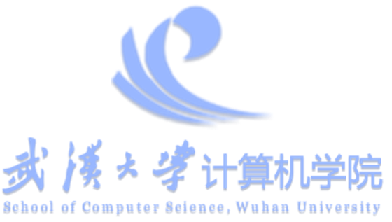
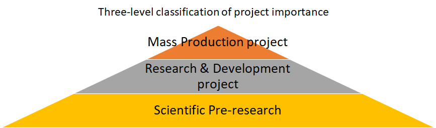
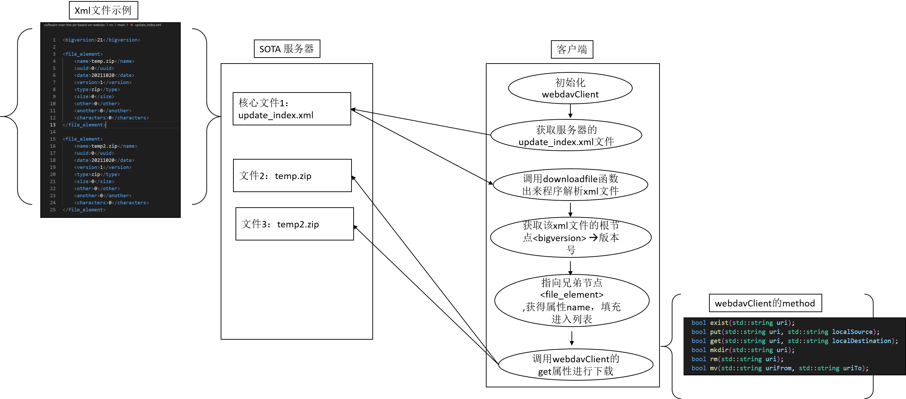
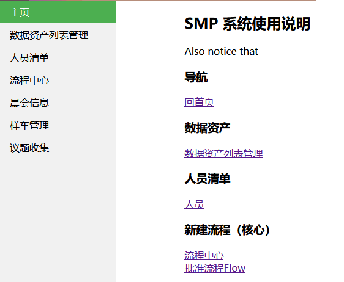

Yixiong Yan (严义雄)
Algorithm Engineer at Perception and Fusion Team
Department of Intelligent Driving Software Development
Dongfeng Motor Corporation Research&Development Institute, Wuhan, China, 430056
Master. Student at Wuhan University, Wuhan, China
Bachelor. Student at South China University of Technology, Guangzhou, China
Email: meeason@foxmail.com


|
Biography
Yixiong Yan is a Perception Algorithm Engineer in Department of Intelligent Driving Software Development, Dongfeng Motor Corporation Research&Development Institute (formerly known as the “Dongfeng Motor Group Co., Ltd. Technology Center”) starting from Autumn 2019, Wuhan, China. His research and development advisor is Hang Yang(2020-2021), Xinjuan Tuo(2022-2024).
Yixiong Yan received the B. E. degree from School of Mechanical and Automotive Engineering, South China University of Technology, Guangzhou, China, in 2019. He will receive the M. A. degree from School of Politics and Public Administration, Wuhan University, Wuhan, China, in 2025.
Yixiong Yan’s research interests include visual perception and visual location in the field of autonomous driving, with a focus on generic/oriented/3D object detection, lane detection and SLAM. He has published some papers at the international conferences and journals and published some key patents. He is the leading contributor to the BEV perception(2022-2024) and IPM SLAM(2020-2021) scientific research projects, and lane detection module application (2020-2021) in mass-produced vehicles based on Mobileye in Dongfeng Motor Group Co., Ltd..
The autonomous driving software department at Dongfeng Motor Corporation Research&Development Institute is now hiring. If you are interested in internship/researcher positions related to autonomous driving perception in the filed of lidar or camera, please feel free to contact me through the email.
🔥My Recent Works
- 01/2024: 11/2022: Team meeting of BEV Multi-tasking visual perception system “SMP”development, , January 31, 2024, Wuhan.
- 01/2024: Develop with NVIDIA DRIVE Driveworks. The completed work includes: Jenkins automatically cross-compiles and uploads binary programs to DRIVE devices, remote VNC access to DRIVE devices, camera opening, and TensorRT 2D target detection. Applications can be quickly developed based on this platform in the future, January 30, 2024
- 01/2024: Based on perceived training GPU requirements, try out Tencent Cloud TIONE platform and discuss follow-up work.
- 01/2024: Communicate with the perception development team of CHINA AUTOMOTIVE INNOVATION CORPORATION (CAIC for short) communicates on BEV perception technology, including four dimensions: analysis and selection of technical routes, display of typical problems and solutions encountered during the research and development process, actual vehicle experience, and data closed-loop tools and automatic test report generation. Nanjing, Jiangsu, January 15, 2024
- 01/2024: Drafted the enterprise standard “Research and Development Method of Multi-sensor Data Fusion Software for ADAS Lane Boundaries Detection Applied to Autonomous Vehicle”, January 5, 2024
- 12/2023: Participate in the 2nd Algorithm Challenge of the Science and Technology Academy and the “Intelligent Network Connection” Backbone Growth Camp. The topic of participation is: BEV sensing algorithm based on cross-view fields.
- 11/2023: Research on the BANGC programming model and CNNL neural network library for Heterogeneous Hybrid Parallel Computing based on the Cambrian AI chip SD5223C. Explore the possibility of using it in the next step of scientific research plans, Wuhan.
- 11/2023: Drafting a “Driving Defect Use Case Library”, November 15, 2023
- 11/2023: Drafting “A Review of Heterogeneous Hybrid Parallel Computing”.November 13, 2023
- 11/2023: Closed-door meeting on autonomous driving simulation and digital twin test and evaluation tool chain projects. The meeting analyzed the latest progress in vehicle complex dynamics (white box, gray box, black box) modeling, guidance on critical scenarios of traffic interference based on UN ECE R157 regulatory annex and human driver baseline, scene generation framework, etc. Professor Zhu Xichan of Tongji University is very helpful👍! Wuxi, Zhejiang, November 10th.
- 07/2023: L3+pre-research, Self development of BEV End-to-end Perception Autonomous Driving Closed door Seminar. The 6th Automotive Technology Review held by the China Society of Automotive Engineers - “The Potential and Paths of Applying AI Large Models to Autonomous Driving” closed seminar was held on July 11, 2023 (Tuesday) from 14:00-17:30 pm Held in the Paris Hall on the third floor of Pullman Hotel Xingji, Yizhuang Economic Development Zone, Beijing.
- 05/2023: L3+pre-research, Completed Self construction of a scalable container platform for deep learning algorithm development and training environment, Dongfeng Technology Center computer room, Wuhan.
- 03/2023: L3+pre-research, Development of visual multi-task perception system PMP based on surround fisheye view,include IPM Visual Parking slot detection system development using fisheye camera, with Calmcar , Wuhan.
- 11/2022: L3+pre-research, Kick-off meeting of BEV Multi-tasking visual perception system “SMP”development with Wuhan University , Wuhan.
- 08/2022: L3-project, IPM view v-SLAM system completed, Wuhan.
- 07/2022: L3-project, G59 vehicle platform L3- HighwayAssist function completed, Wuhan.
- 10/2021: L3+pre-research, Self development of visual multi-task perception system “PMP” based on surround fisheye view, Wuhan.
- 09/2021: At the 6th Science and Technology Innovation Week, the memory parking function based on theIPM view v-SLAM system was demonstrated to the public in the parking lot of Building #2 of the Technology Center. The maximum distance of memory parking is 500 meters, at 2021 Dongfeng Motor Brand Autumn Press Conference and the 6th Science and Technology Innovation Week.
- 09/2021: L3-project, HighwayAssist driving system development scientific research project completed, The scientific research technology has entered the engineering stage and plans to equip the G59 vehicle platform with L3- HighwayAssist function, Wuhan.
- 01/2021: L3+pre-research, Obstacle detection using Hesai 64-line lidar based on Xavier platform, with Mingshan Jiang(Changan Automobile Software Technology), Zhigao He(Lianyou Technology). Wuhan.
- 10/2020: L3-project, IPM view v-SLAM system development in cooperation with Calmcar, and the target platform is TDA4 TI, Tianjin and Wuhan.
- 10/2020: L3+pre-research, Kick-off meeting of the L3+ autonomous driving perception pre-research project based on DDS communication, with interns Ruichen Tan (Ohio University), Hao Chao, Zhigao He,Peijie Chen, etc. Four major categories of things were accomplished: 1. Established a communication matrix and completed the hierarchical decomposition of software modules. 2. L3+ implements CAN DBC parsing and successfully integrates the L3- fused simulink model (c code generated using a code generation tool). 3. Completed the obstacle detection of visual YOLO and lidar YOLO 4. Draw the laser SLAM-NDT to obtain the point cloud map of the Dongfeng technology center, and use RoadRunner to draw the map to obtain the road network OpenDrive map. Fusion loaction through IMU+GPS.
- 08/2020: L3-project, Offline two-stage object detection perception model, perform perceptual fusion ACC recall test, developed with Mengqi Lu(Lianyou Technology), Wuhan.
- 06/2020: L3-project, Kick-off meeting of v-SLAM system development project was launched, for LAPA memory parking. SLAM (Simultaneous Localization and Mapping) is one of the key technologies of LAPA memory parking; when the vehicle is in a ground or underground parking garage and there is no reliable GPS signal coverage, LAPA (memory parking) needs to use SLAM technology for vehicle positioning, Wuhan.
- 01/2020: L3-project, Kick-off meeting of HighwayAssist driving system development scientific research project, based on smart cameras and millimeter wave radar, I was mainly responsible for developing the lane line module and the development tools are simulink and code generation tools, based on AutoSar middleware, Wuhan, January 10th, PM8:00-23:00.
📝Selected Publications
| Pictures | Comments |
|---|---|
 |
Visual SLAM in Long-Range Autonomous Parking Application Based on Instance-Aware Semantic Segmentation via Multi-Task Network Cascades and Metric Learning Scheme Yixiong Yan, Yang Hang, Tianren Hu, Hao Yu, and Feng Lai  |
 |
Streaming Object Detection on Fisheye Cameras for Automatic Parking Proceedings of China SAE Congress 2023: Selected Papers Yixiong Yan*, Liangzhu Cheng, Yongxu Li, Xinjuan Tuo, Baoqiang Huang & Yakun Zhu  |
📝 Preprints
| Pictures | Comments |
|---|---|
 |
BEV Transformer Perception: Tracking and Mapping, For Autonomous Driving |
📚 Academic Activities
Conference Reviewers & Journal Reviewers
- SAE Technical Papers 2021
Tech. Talks
- “The Potential and Path of AI Big Models Applied to Autonomous Driving” Closed door Seminar, The 6th Automotive Technology Review, China-SAE, July 11, 2023
- Dongfeng Motor and Huazhong University of Science and Technology: Closed-door meeting on autonomous driving and visual perception, Participating vlrlab team, etc. May 24, 2022.
- 2021 SAE WCX World Congress Digital Summit between April 13-15, 2021
🎓 Education
| Pictures | Comments |
|---|---|
 |
B.E. degree from School of Mechanical and Automotive Engineering, South China University of Technology, Guangzhou, China Sep. 2015 - July 2019 GPA: 3.48/4.0 Rank: 30/138 CET-6 Under the guidance of Professor Xifan Yao of School of Mechanical and Automotive Engineering |
 |
M.A. degree from School of Politics and Public Administration, Wuhan University, Wuhan, China Sep. 2023 - July 2025 Under the guidance of Professor Xinyuan Liu of School of Politics and Public Administration |
🧑💻 Internship and Cooperation
| Pictures | Comments |
|---|---|
|  | Cooperate with School of Computer of science, Wuhan University to develop visual perception algorithm technology, and serve as project manager(PM) Jan. 2023 - Sept. 2023 |
 |
Cooperated with Calmcar to develop an automatic parking visual location algorithm, served as the project leader(PL) and accomplished the development work, and successfully promoted the mass production application of the automatic parking function. Jan. 2021 - July. 2022 |
 |
Cooperated with Jilin University to develop a perception and fusion algorithm, served as lane detection technology manager(TM), and successfully converted the scientific research code to the application of mass production vehicle Jan. 2020 - July. 2022 |
Joined Dongfeng Motor Group Co., Ltd. Technology Center, Intelligent Connected Department, Perception Fusion Department, and served as algorithm engineer(AE) Aug. 2019 - Now |
|
Under the guidance of Professor Xifan Yao of School of Mechanical and Automotive Engineering, South China University of Technology, I completed the research and exploration of simultaneous localization and mapping (SLAM) based on lidar. In the evaluation system of the college, my graduation thesis achieved excellent results. During this experience, I learned scientific research methodology and correct scientific research ethics and completed scientific research work through data retrieval, document translation, method refinement, and experimental verification. Sept. 2018 - Jun. 2019 |
|
 |
Worked as an application engineering intern at Texas Instruments, passed the primary operation qualification of the laboratory, and learned the technical knowledge of analog electronics. As a member of the mass market team, responsible for new solutions and troubleshooting services for CAN communication and motor drive chips, responsible for 10-20 downstream customers, and received high praise from customers for communication skills and professional quality. July 2018 - Sep. 2018 more |
 |
Served as the leader of the electronic control group (with about 10 members) of the Formula Racing Laboratory of the South China University of Technology, won the first prize in the 2017 Formula Student China(FSC). Responsible for development plans, teamwork arrangements, and progress advancement. Improved the circuit of the whole vehicle, completed the hardware design and software writing of the new generation of engine starting circuit board, the main control board, and the steering wheel remote control circuit board, completed the CATIA modeling of the circuit and the fixed scheme design, and improved the variable tail wing circuit system of the car design. Promoted the construction of the team’s ability system and normative standards. July. 2016 - July 2018 more |
📝 Projects Approved
The list of projects with funding is as follows:

| Type | Project Name | Period | Role | demo |
|---|---|---|---|---|
| Mass Production project | G59 vehicle platform L3- HighwayAssist function | 2020.1-2022.7 | Lane Module owner | more |
| Mass production project | M18 vehicle platform L3- HighwayAssist function | 2022.11-2023.10 | Lane Module Ordinary participation |
| Type | Project Name | Period | Role | demo |
|---|---|---|---|---|
| Research & Development project | IPM view v-SLAM system, for LAPA memory parking | 2020.10-2022.8 | Project Manager | more |
| Research & Development project | BEV Multi-tasking visual perception system, for Navigate on Autopilo(NOA) | 2022.11-now | Project Manager | more |
| Research & Development project | Surround fisheye view perception PMP system, for LAPA memory parking | 2023.3-now | Ordinary participation | more |
| Type | Project Name | Period | Role | demo |
|---|---|---|---|---|
| scientific research project |
🎖 Awards
- Outstanding employees of Dongfeng R&D Institute in 2023 (proportion is 6% of total employees), January 5, 2024, Dongfeng R&D Institute.
- The 7th Dongfeng Youth Independent Innovation Technology Award for “Development and Application of Visual Parking Slots Perception for Automatic Parking”, 2023, Dongfeng Motor Corp.
- Gold Award for L2 assisted driving lane keeping function at 80km/h turning based on Dongfeng Fengshen Haoji SUV passenger car,Tianjin,2022, World Intelligent Driving Challenge (WIDC).
- Excellence Award for “L2 Perception Fusion Development Tool System”, 2020, Dongfeng Motor Corp.
- Outstanding Student Officer, Outstanding Student, National Inspirational Scholarship, Esquel Group Enterprise Scholarship, 2015-2019
🛠 Open Source Projects
| Pictures | Comments |
|---|---|
 |
Real-time Object Detection on Fisheye Cameras for Streaming Perception repo: Gitee Curl |
|  | Software-Over-the-Air-based-on-Webdav repo: Gitee Curl |
|  | Process Management System based on php-nginx-mysql repo: Gitee Curl |
💻 Demos
-
2023: Perception system “PMP” based on surround fisheye view
-
2023: Heterogeneous Hybrid Parallel Computing based on the Cambrian AI chip SD5223C
-
2022: v-SLAM system, for LAPA memory parking(2020.6-2022.12)
-
2021: The lane line module,based on smart cameras and millimeter wave radar.(2020.1-2022.7)
-
2021: Obstacle detection using Hesai 64-line lidar based on Xavier platform.(2021.1~2021.6 )
-
2019: Lidar-based indoor mobile robot simultaneous positioning and Mapping research
📝 Interests And Hobbie
1、Internet technology enthusiast. Use Alibaba Cloud servers to complete many services. Used to build personal homepages, MySql service, PHP-based progress management webpages, WebDAV (Web-based Distributed Authoring and Versioning) file storage services, AriaNG’s offline download services, privacy protection proxy services, redmine’s task management services, EMQX’s MTQQ Internet of Things IoT services.
2、Balance Car and Motor Control Enthusiast. Based on Automatic Control Principle. Software tools used include Simulink algorithm design and Altium Designer Printed Circuit Board design, as well as solidworks 3D modeling and 3D printers. NXP’s s12 chip, stm32f1 or Raspberry Pi rp2040 is usually used to implement the function.
3、Software Defined Radio(SDR) Enthusiast. The terminal used is SDR RSP1, using a metal parabolic satellite antenna, trying to create a tracking gimbal and communicate with China Space Station and International Space Station.
4、Smart home IoT enthusiast. Realize home device control and monitoring based on ESP-01 module, Raspberry Pi and WeChat applet.
5、Like to play sandbox games, such as “Don’t Starve”, “Red Alert”.
6、Advocates of blockchain technology.
📝 Culture and Philosophy
1、Electronic piano.
2、Graduate students in public administration and public policy.
Guest Statistics